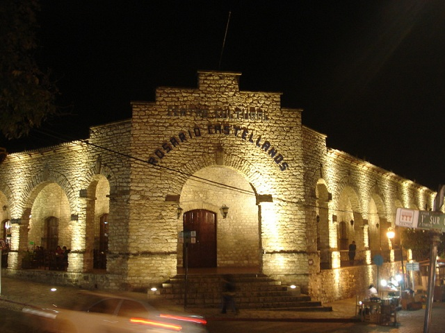

Este es uno de los centros culturales más activos, le ofrece talleres; de baile, de marimba. El centro cultural está ubicado en donde fue el convento dominico de Santo Domingo. Dentro de este centro cultural se encuentra un mural elaborado por Rafael varez, que narra la historia comiteca.
Partiendo de San Cristóbal:
Ubíquese en Diagonal Hnos. Paniagua – gire a la izquierda hacia las Américas/San Cristóbal de las Casas-Comitán de Domínguez/México 190 – siga en esa dirección – gire a la izquierda con dirección a calle a Sur Pte. – Continúe por ¡a Sur Ote. – gire a la izquierda con dirección a 1ª Av. Ote Sur hasta llegar al Centro Cultural Rosario Castellanos.
Si usted se encuentra en Comitan:
Ubiquese en la 1ª sur Oriente esquina Avenida Rosario Castellanos.
Una de las actividades que puede realizar está vinculada al patrimonio Histórico-Cultural, usted podrá recorrer el Centro Cultural, observar la arquitectura, los murales y las exposiciones temporales.

posicione el mouse sobre las imágenes